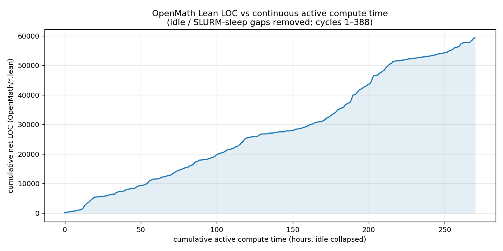

Uses a Claude-driven agent pipeline to formalize a numerical-analysis ODE textbook in Lean 4 and audits formalization faithfulness beyond compilation.
Abstract
Recent work has demonstrated that coding agents can formalize entire advanced mathematics textbooks in Lean 4, yet existing efforts concentrate on branches of mathematics already well-represented in mathlib and measure success solely through kernel acceptance. We address both limitations by applying a coding agent to formalize Numerical Methods for Ordinary Differential Equations, a textbook in numerical analysis that is largely absent from mathlib, stressing the agent's capacity to develop new theory from scratch. We further introduce a systematic, reproducible three-dimensional framework for evaluating the quality of agent-produced formalizations beyond compilation: semantic correctness, Mathlib reuse, and cross-file reuse via LLM-as-judge methods. Applying this framework to our own formalization and to the released outputs of RepoProver and M2F, we uncover recurring unfaithful formalization patterns, including incomplete multi-part statements, added weakening hypotheses, and parameter restrictions, that kernel acceptance entirely obscures. Our results suggest that compilation-based metrics substantially overstate formalization quality, and we provide a reproducible audit methodology to support more rigorous evaluation of future autoformalization systems.
Problem
Agentic autoformalization has scaled to whole textbooks, but prior work targets mathematics already well-covered by Mathlib and reports success only as kernel acceptance. It is unclear how these systems behave when theory must be built from scratch, or whether compilation reflects faithfulness to the source.
Approach
An autonomous loop driven by a Python orchestrator invokes four LLM roles (Planner, Worker, Evaluator, Consultant), implemented with Claude Opus 4.6 and Sonnet, to formalize Butcher's Numerical Methods for Ordinary Differential Equations in Lean 4, committing edits only when Lean builds. A reproducible three-dimensional LLM-as-judge framework then scores semantic correctness, Mathlib reuse, and cross-file reuse, applied to their own output and to the released RepoProver and M2F formalizations.
Results
The pipeline produced proof-complete Lean for 84 of 175 statements (48%, or 54.9% counting partials) with zero sorries and zero added axioms, yet 42% of its statements diverged semantically from their natural-language sources. RepoProver and M2F diverged 18% and 25% despite near-zero sorry counts, showing that compilation-based metrics substantially overstate formalization quality.

Figure 3 : LOC vs active compute time.
System
Sorries
Axioms
RepoProver
5*
0
M2F
12
4
OpenMath
0
0
Table 1: Open sorries and unnecessary axioms across systems (RepoProver sorries are intentional exercises).
System
Faithful
Stronger
Different
OpenMath
54%
4%
42%
M2F
73%
2%
25%
RepoProver
82%
1%
18%
Faithfulness of formal statements vs. natural-language sources (direct judgment).